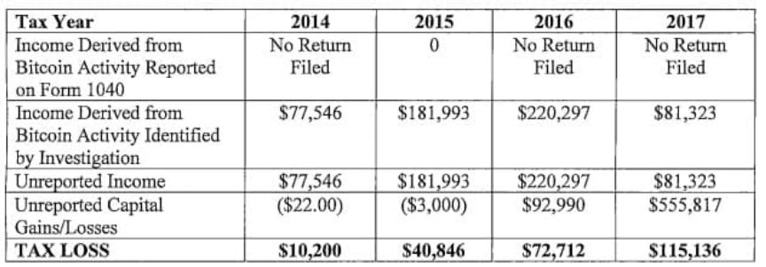
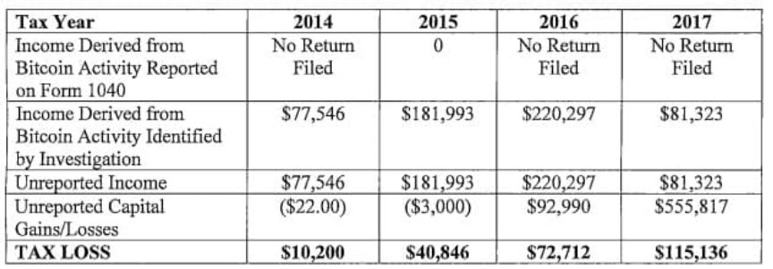

Florida Man Convicted of Using Crypto Mixers to Evade Taxes
~2 min read | Published on 2022-10-04, tagged Crypto-Mixer, General-News, Tax-Evasion using 308 words.
A Florida man admitted using “sophisticated online techniques” to conceal more than $1 million in cryptocurrency from the IRS.
Ethan Thomas Trainor pleaded guilty to attempted tax evasion. According to information revealed in court and a proffer statement, Trainor sold hacked online accounts on darkweb markets in exchange for cryptocurrency. He used mixers in an attempt to obscure the source of the funds. Trainor then underreported his earnings to the IRS by filing tax returns that underrepresented his earnings.
For example, according to a criminal information, Trainor filed a tax return in 2015 that was short by $181,933. As a result, the filing resulted in a “loss” to the federal government of $40,846.

Trainor admitted that he filed similar tax returns multiple times, resulting in a total “loss” to the federal government of $238,894.
From the proffer statement:
“Ethan TRAINOR bought and sold hacked online account login (usernames and passwords) for movie streaming websites such as Netflix, pornography websites, Spotify, Major Sports websites, laming websites, and Uber accounts through various dark net markets. TRAINOR illegally obtained these usernames and passwords using various methods, from hacking the accounts himself to buying the hacked usernames and passwords. These darknet markets that TRAINOR operated on are specifically designed to facilitate illegal commerce and provide anonymity through user concealment and by employing numerous financial obfuscation techniques. Agents were able to successfully trace the virtual flow of cryptocurrency proceeds from TRAINOR’s sales on various blockchains to numerous mixing and cash-out services.”
There is virtually no information on how investigators tracked Trainor’s activities. Perhaps they flagged him for tax evasion and worked backward from there. He faces up to five years in prison and is scheduled to be sentenced in December.
Non-Payment of Federal Income Tax on Cryptocurrency Earnings Leads to Conviction for South Florida Resident | www.justice.gov, archive.is, archive.org
Statement
Ethan Thomas Trainor pleaded guilty to attempted tax evasion. According to information revealed in court and a proffer statement, Trainor sold hacked online accounts on darkweb markets in exchange for cryptocurrency. He used mixers in an attempt to obscure the source of the funds. Trainor then underreported his earnings to the IRS by filing tax returns that underrepresented his earnings.
For example, according to a criminal information, Trainor filed a tax return in 2015 that was short by $181,933. As a result, the filing resulted in a “loss” to the federal government of $40,846.

The underreported amounts
Trainor admitted that he filed similar tax returns multiple times, resulting in a total “loss” to the federal government of $238,894.
From the proffer statement:
“Ethan TRAINOR bought and sold hacked online account login (usernames and passwords) for movie streaming websites such as Netflix, pornography websites, Spotify, Major Sports websites, laming websites, and Uber accounts through various dark net markets. TRAINOR illegally obtained these usernames and passwords using various methods, from hacking the accounts himself to buying the hacked usernames and passwords. These darknet markets that TRAINOR operated on are specifically designed to facilitate illegal commerce and provide anonymity through user concealment and by employing numerous financial obfuscation techniques. Agents were able to successfully trace the virtual flow of cryptocurrency proceeds from TRAINOR’s sales on various blockchains to numerous mixing and cash-out services.”
Very serious IRS-CI agents in training
There is virtually no information on how investigators tracked Trainor’s activities. Perhaps they flagged him for tax evasion and worked backward from there. He faces up to five years in prison and is scheduled to be sentenced in December.
Non-Payment of Federal Income Tax on Cryptocurrency Earnings Leads to Conviction for South Florida Resident | www.justice.gov, archive.is, archive.org
Statement
The last thing you see